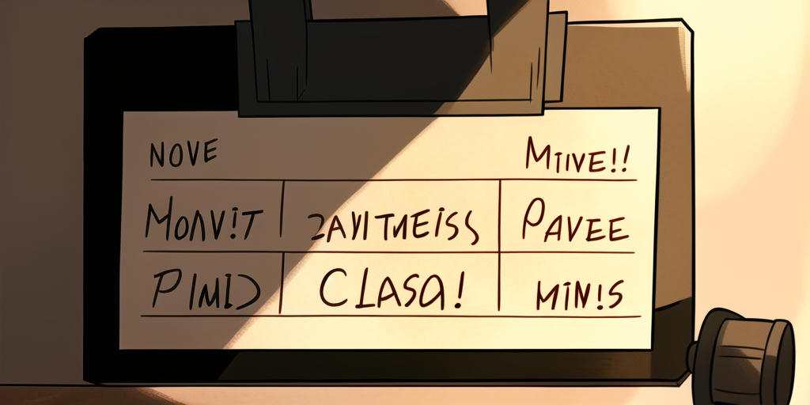
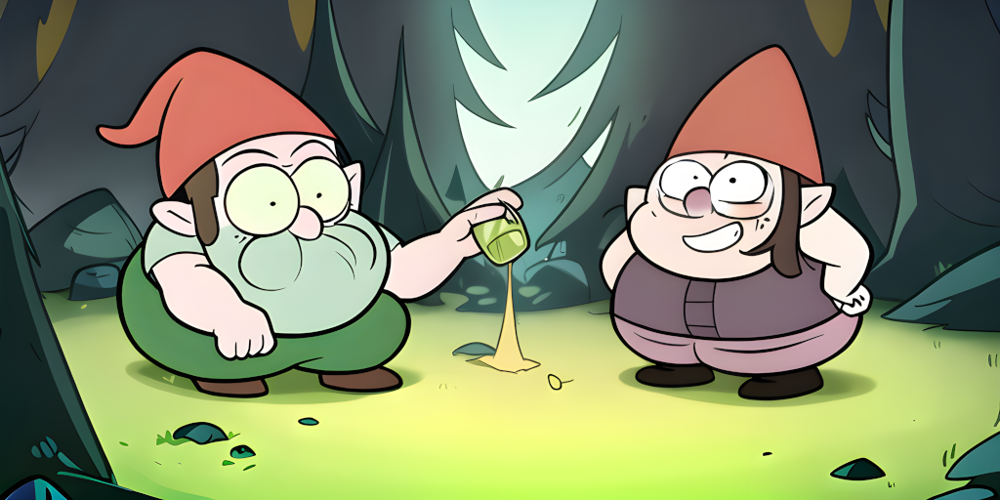

In A Nutshell

Carapace is a shell completion library (carapace-sh/carapace) as well as a binary containing a collection of shell completers (carapace-sh/carapace-bin). It works across multiple operating systems and multiple POSIX and non-POSIX shells.
Getting Started
Refer to Install and Setup to get it up and running on your system.
You can use any shell you want, but it is highly recommended to give Elvish a try. Not only shows it best what Carapace can do. It is pretty awesome anyway.
Links
| Link | Description |
|---|---|
| carapace.sh | website |
| freckles.carapace.sh | example application |
| Documentation | |
| carapace-sh.github.io/carapace | documentation of the library |
| carapace-sh.github.io/carapace-bin | documentation of the binary |
| carapace-sh.github.io/carapace-spec | documentation of the spec |
| carapace-sh.github.io/carapace-pixi | picture book introduction |
| Core Projects | |
| carapace | library |
| carapace-bin | binary |
| carapace-bridge | completion bridge for various frameworks |
| carapace-pflag | flag parser for non-posix variants |
| carapace-selfupdate | simple self-update mechanism |
| carapace-shlex | lexer for complex single string arguments |
| carapace-spec | YAML spec for custom completions |
| Scraper | |
| carapace-spec-clap | spec generation for clap-rs/clap |
| carapace-spec-kingpin | spec generation for alecthomas/kingpin |
| carapace-spec-kong | spec generation for alecthomas/kong |
| carapace-spec-man | spec generation for manpages |
| carapace-spec-urfavecli | spec generation for urfave/cli |
Porcelain Shop

Shell completion is hard. Really hard. And there are all sorts of traps that make you break things unknowingly.
How it works
A function gets passed the current command line up to the cursor position split into words.
command --flag1 positionalArg1 "positionalArg2 with space" <TAB>
# ['command', '--flag1', 'positionalArg1', 'positionalArg2 with space', '']
It then returns possible values to replace the current word with.
posArg3
positionalArg3
The Native Approach
Here, the logic to generate the possible values is done in a native shell script. But writing these isn't easy and tends to become complicated quickly. Few shells even provide a decent framework for it. So everyone ends up making the same mistakes. Over and over again.
Have a look at the script powering your
gitcompletion. It is as impressive as it is scary.
The Generator Approach
Since writing them is so hard some argument parsers generate them. This avoids common mistakes and keeps the script in sync with the application. It is however still bound to the limits of the shell. Writing a good generator is even harder than writing a completion script. So there are inconsistencies between shells. If they are supported at all.
The Combined Approach
Here, a part of the logic is delegated to the application. It handles complex value generation. Like retrieving data from a service. Then returns these to the shell script. But this still relies on shell functions and suffers from the same issues as above.
The Detached Approach
Now let's take this one step further. By not relying on the shell we can reduce the completion script to a minimum using a clear interface. All it does is pass information between the shell and the application. This poses some challenges as well of course. But it ensures consistency between shells. And enables highly advanced features.
Hulk BASH!

Carapace supports all major shells. It does not rely on shell-specific functions and even has its own custom file completion. This way it can provide features that not only are consistent across shells. But exceed what they natively provide.
Bash
Take Bash for example. What a nasty little bugger. By default Bash has no support for descriptions. But with some trickery, these can be added.
Then there are more complicated topics. Like Wordbreaks, where you must return a substring of the value to be inserted. And Redirects, which are passed unfiltered to the completion function.
Carapace had to resort to its Lexer to handle these correctly.
You really don't want to write completions for Bash. I went all green on this one.
Fish
Fish is a bit more advanced and has a modal completion menu with descriptions.
It also takes care of correctly escaping special characters in the values. And provides a basic framework for creating completion scripts.
But replicating a complex argument structure isn't easy and subcommand determination is rather optimistic.
function __fish_seen_subcommand_from
set -l cmd (commandline -pxc)
set -e cmd[1]
for i in $cmd
if contains -- $i $argv
return 0
end
end
return 1
end
Carapace relies on the work done in spf13/cobra. It is a widely adopted argument parser that does this without guesswork.
Zsh
Between shells, Zsh so far has the most sophisticated framework for writing completions.
But it might be a bit too complex.
Learning it takes some effort and there are limitations and traps as well.
Coloring for example is done using complicated and slow regex matching.
It is thus mostly used for file completion (LS_COLORS) and rarely seen in custom scripts.
Carapace adopted Styles from Elvish. A human-readable abstraction of ANSI Escape Sequences.
See Puking Rainbows for how this works in detail.
Pandoras Box

Arguments passed to an application are positional. This means they have a specific order in which they appear. But some can be logically declared as Flags. How this is done, however, is entirely up to the author.
POSIX
A commonly used convention where longhands have a -- and shorthands a - prefix.
They may appear interspersed with positional arguments and some are repeatable.
Shorthands can also be chained.
Non-POSIX
Then there are other approaches that in most cases arguably aren't a good idea.
Like shorthands with more than one character which prevents chaining. Or the abuse of flags as subcommands. And non-interspersed mode, which may be easier to parse, but limits UX. Some even mix different formats.
Carapace forked pflag to support these. But avoid them if you can.
Dash
The -- argument is a special case and disables flag parsing for arguments following it.
However, how it is handled differs between applications.
Many simply continue the positional arguments.
But some, like gh repo clone, use it for something else.
Overly Attached Argument
Flags can also take an argument. And there are multiple variants to this.
POSIX
Flags that require an argument consume the one next on the command line.
But it can also be attached directly to the name with a = delimiter.
And for shorthands, the delimiter can even be left out.
Flags that take an optional argument do so only in the attached version.
Not all commands support each of these variants.
Non-POSIX
There are also some less recommended variants.
Like Flags consuming multiple arguments.
Or using a different delimiter than =.
Lights, Camera, Action!

An Action defines how a position is completed in Carapace.
It consists of either the static values to be inserted. Or a function to generate them. Also, some metadata.
Reusable
An Action is reusable. It can be prefixed, filtered, styled, converted to a list, and even cached.
Take the repository completion for example.
It consists of ActionOwners and ActionRepositories combined in various ways.
Originally written for gh, it is also used in git, go, and other commands.
Contextual
An Action is invoked with Context.
This enables a modified behavior based on work directory, environment variables, or positional arguments.
Modular
Multiple Actions can be invoked concurrently and merged into one.
Like tig, which accepts subcommands, files, and git references.
Each of these is a separate Action.
Group Therapy
Values can not only be styled, they can also be tagged. The former may signify the state of a value, and the latter classifies it.
Implicit
Subcommands are implicitly tagged and styled based on their group.
Explicit
Other values can be tagged explicitly.
Spec-tacular Citizen
Simple completions can be created using YAML Specs.
They are first-class citizens in Carapace and behave similarly to the internal completers.
Basic
Flags are defined as a map of name and description. And Completions using an array of Values and Macros.
Macro
With a little regex and reflection magic Actions are exposed as Macros. There are Core, Modifier, and Custom Macros.
Envsubst
Contextual completion is possible using variable substitution.
Plugin
Specs can also be embedded as subcommands for plugin completion.
Running Man

Specs containing a run field can be executed using Shims.
Alias
Alias bridges a command while retaining the argument completion.
Script
Scripts are executed with sh on Unix systems and pwsh on Windows.
Subcommand
Combined with subcommands a reduced set of complex commands can be created.
Greenwashing

Carapace completes environment variables with get-env, set-env, and unset-env.
Complex
Be it log levels for CARGO_LOG, repositories for GH_REPO, or a command with arguments for GIT_PAGER.
Custom
Or custom variables that can use the same Macros as in Specs.
Conditional
With Conditions, they can be shown only when they matter.
Wiretap

Carapace can tap into other completion sources and bridge them.
Command
Commands using the combined or detached approach can simply be invoked.
Shell
Shells are a bit trickier and may require nasty scripting.
Embed
Carapace invokes itself for continuous embedding.
Explicit
Bridges can be registered using Specs. There is also a config alternative for convenience.
Implicit
Other completion sources can be configured for an implicit fallback.
Sandcastle

Tests ensure Carapace plays well with your shell.
Assert
Assert compares InvokedActions.
Sandbox
Sandbox runs a command in a temporary folder and validates its output.
VHS
VHS visually confirms the behaviour in a virtual terminal.